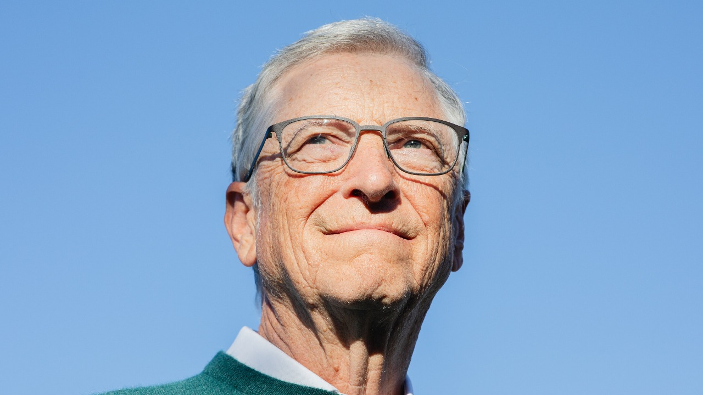

El 4 de abril de 1975, Bill Gates y Paul Allen fundaron oficialmente "Micro-Soft" (luego Microsoft) en Albuquerque, Nuevo México. Su primer gran contrato fue con MITS para proveer el sistema BASIC para la computadora Altair.
En 1980, IBM necesitaba un sistema operativo para su nueva computadora personal. Gates compró QDOS (Quick and Dirty Operating System) por $50,000, lo modificó y lo renombró MS-DOS. Lo licenció a IBM, pero conservó los derechos para venderlo a otros fabricantes. Esta fue una de las decisiones de negocios más inteligentes en la historia de la tecnología.
Microsoft lanzó Windows 1.0 en 1985, introduciendo la interfaz gráfica a las masas. Pero fue Windows 3.0 (1990) y especialmente Windows 95 los que convirtieron a Microsoft en el líder indiscutible del mercado. Windows 95 vendió 7 millones de copias en las primeras 5 semanas.
En 1998, el Departamento de Justicia de EE.UU. demandó a Microsoft por prácticas monopolísticas, específicamente por incluir Internet Explorer con Windows. Gates testificó y finalmente Microsoft fue declarada culpable, aunque la sentencia fue menos severa de lo esperado.
En 2000, Gates y su esposa Melinda fundaron la "Bill & Melinda Gates Foundation" con un fondo inicial de $28 billones. Se convirtió en la fundación privada más grande del mundo, enfocada en salud global, educación y combate a la pobreza.
La fundación ha vacunado a millones de niños, combatido enfermedades como la malaria y polio, y mejorado el acceso a educación en países en desarrollo. Gates ha donado más de $50 billones a causas benéficas y se ha comprometido a donar el 95% de su fortuna.
Gates ha recibido numerosos premios, incluyendo la Medalla Nacional de Tecnología, el título de Caballero Honorario del Imperio Británico, y junto con Melinda, el Premio Príncipe de Asturias de Cooperación Internacional. Aunque ya no está involucrado en el día a día de Microsoft, sigue siendo una de las voces más influyentes en tecnología y filantropía.
Gates se divorció de Melinda en 2021 después de 27 años de matrimonio. Sigue siendo activo en la fundación y en proyectos de energía limpia. Vive en Washington y continúa siendo una de las personas más influyentes del mundo.
Proyecto escolar - Preparatoria - Asignatura: Informática